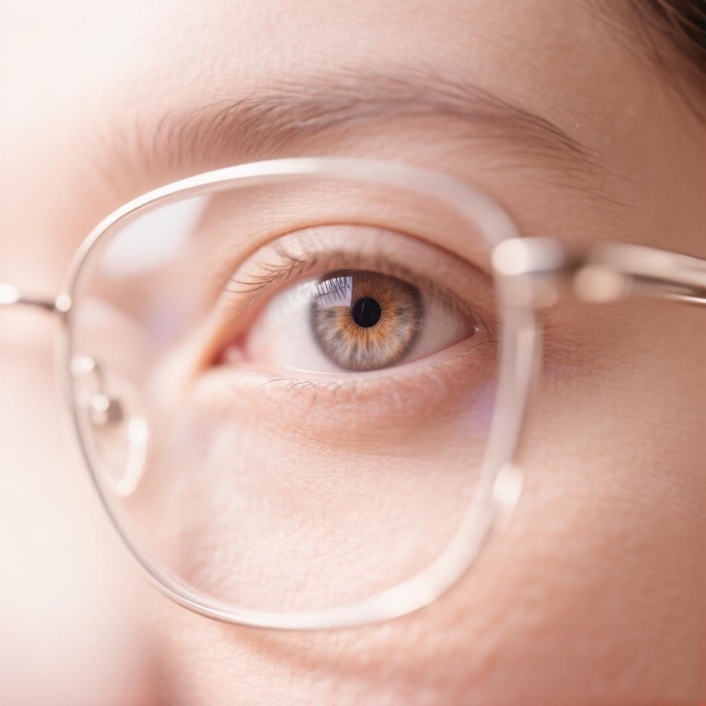
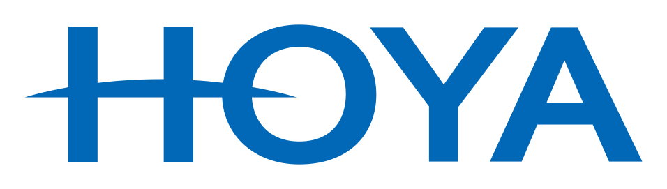
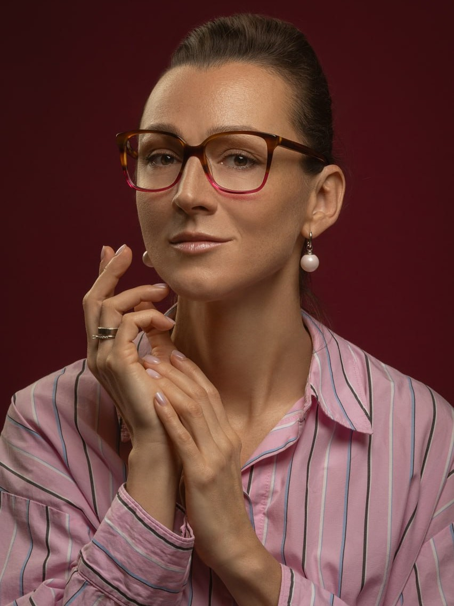
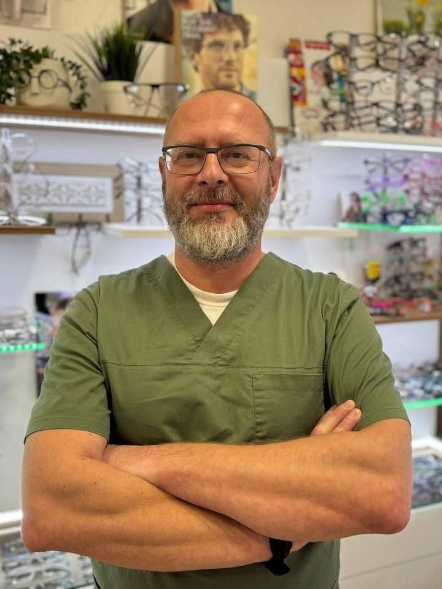
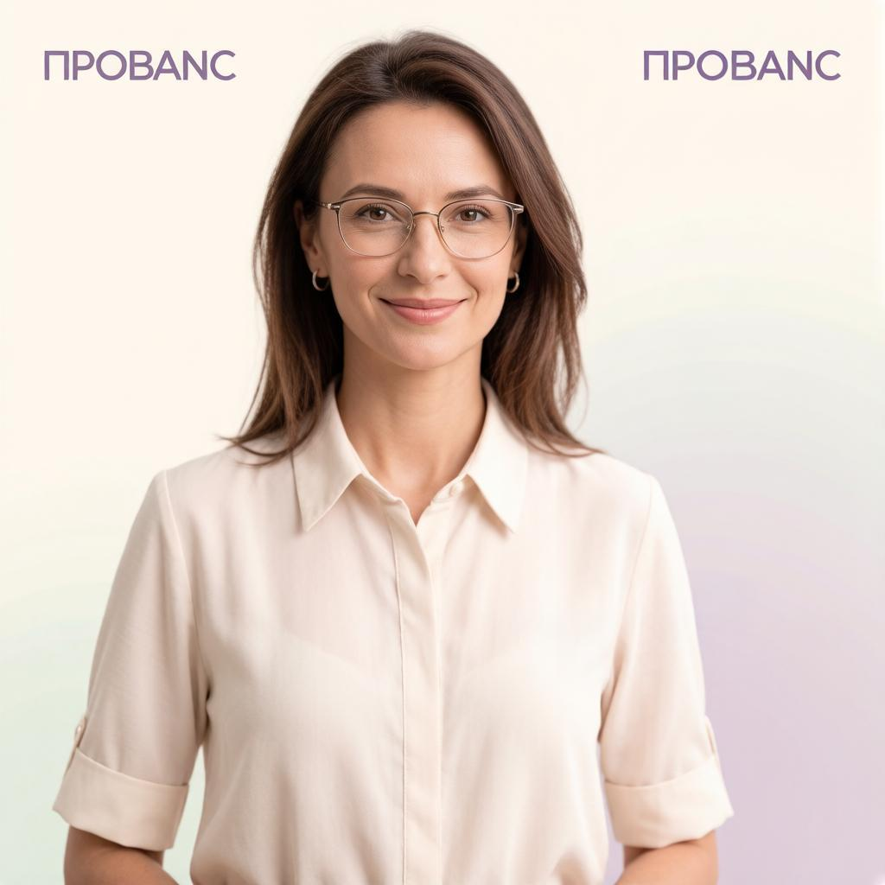

Проверяем зрение у сертифицированного оптометриста, подбираем оправу под форму лица и делаем очки с линзами Hoya под рецепт — за один визит, по-домашнему спокойно.

От первичной проверки до готовых очков на руках — не нужно ездить в разные места.
Полная диагностика остроты зрения и подбор коррекции у оптометриста с медицинским образованием.
Помогаем выбрать форму и материал под тип лица, посадку и то, как вы носите очки каждый день.
Изготавливаем очки в сертифицированной мастерской Hoya: однофокальные и прогрессивные линзы, с покрытиями от бликов и синего света.
Большинству клиентов не нужно приходить дважды.
Записываетесь онлайн через сервис записи или звоните — подберём удобное время в течение 1–2 дней.
Оптометрист измеряет остроту зрения и определяет параметры коррекции — около 30 минут.
Вместе выбираем оправу и тип очков с учётом рецепта, образа жизни и бюджета.
Линзы изготавливаем в сертифицированной мастерской Hoya — чаще всего очки готовы в тот же день.

Мы — официальный партнёр Hoya (Япония). Какая линейка подойдёт именно вам, подбирает оптометрист на приёме — под рецепт и образ жизни.
Классическая коррекция для дали или близи. Сферические (HI-LUX) и асферические (NU-LUX) — тонкий профиль, меньше искажений по краю.
Одна линза для всех расстояний. Линейки: iD MySelf — максимум комфорта, iD LifeStyle 3 — для активного образа жизни, Dynamic и Balance на любой бюджет.
Сами темнеют на солнце и светлеют в помещении. Sensity 2 — затемняются даже за лобовым стеклом. Без второй пары очков.
Линзы для контроля близорукости у детей, вся линейка в наличии. Технология D.I.M.S. замедляет прогрессирование миопии в среднем на 60% — от базовой версии до нового поколения iQ.
Позвоните — расскажем, какая линейка Hoya подойдёт под ваш рецепт и бюджет. Позвонить в магазин →
Спокойно и по-доброму: каждый помогает подобрать то, что подходит именно вам — под вашу жизнь, а не формальный рецепт.

«Люблю, когда на приёме человек расслабляется и перестаёт бояться проверки. Зрение — это не страшно, это про то, как тебе удобно жить. Подбираю очки так, чтобы в них было комфортно с утра до вечера».

«Мелочи решают всё: где будет линия близи, как заходить за ухо, не давит ли подушечка. Смотрю на миллиметр и довожу посадку до того, чтобы об очках не думали вообще».

«Для меня почти каждый приём — это взгляд на человека целиком: как он живёт, чем занят, за рулём ли сидит. От этого зависит, какие очки будут по-настоящему удобны».
Рейтинг 5,0 на Яндекс.Картах — делимся отзывами наших клиентов.
Выберите удобное время в сервисе записи — приём ведут оба оптометриста, по будням и субботам.
Записаться на приём →Или позвоните: +7 (915) 254-53-59